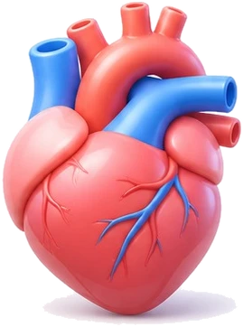

간병 체크
2026.11.17
간병보험,
일당보다 조건
450만원
간병비 하루 15만 원이면 한 달
하루 15만 원 × 30일 기준 · 투데이신문 10.19

BARUM 바름지점1/5
바뀌는 제도
요양병원 간병비 부담
30% 안팎
지금은 환자가 100% 부담
2027년부터 의료 필요도
높은 환자부터 추진해요
의료중심 요양병원 500곳 내외 · 약 8만5천 명 대상 추진 · 세계일보 07.28

BARUM 바름지점2/5
약관에서 볼 3가지
최대 일당보다
이 칸을 보세요
요양병원에선
한도가 낮아지는 상품5~7만
간호·간병통합서비스
보장 따로 있나확인
간병인 비용
낸 증빙챙기기
일부 상품 기준 · 상품별로 달라요 · 투데이신문 10.19
BARUM 바름지점3/5
그래도 남는 부분
가족이 낸 간병비
11.4조원
2024년 사적 간병비 추정
건보 간병 적용도
일부 환자부터예요
금융감독원 자료 인용 · 투데이신문 10.19
BARUM 바름지점4/5
정리
내 간병보험,
어디서 나오나요
일반병원·요양병원·
통합병동, 세 곳에서
각각 얼마인지 보세요
증권 보내 주시면
같이 확인해 드릴게요

언제나, 늘 곁에 · BARUM 바름지점5/5